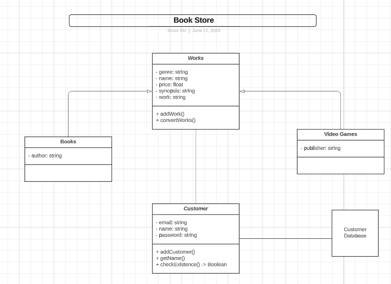
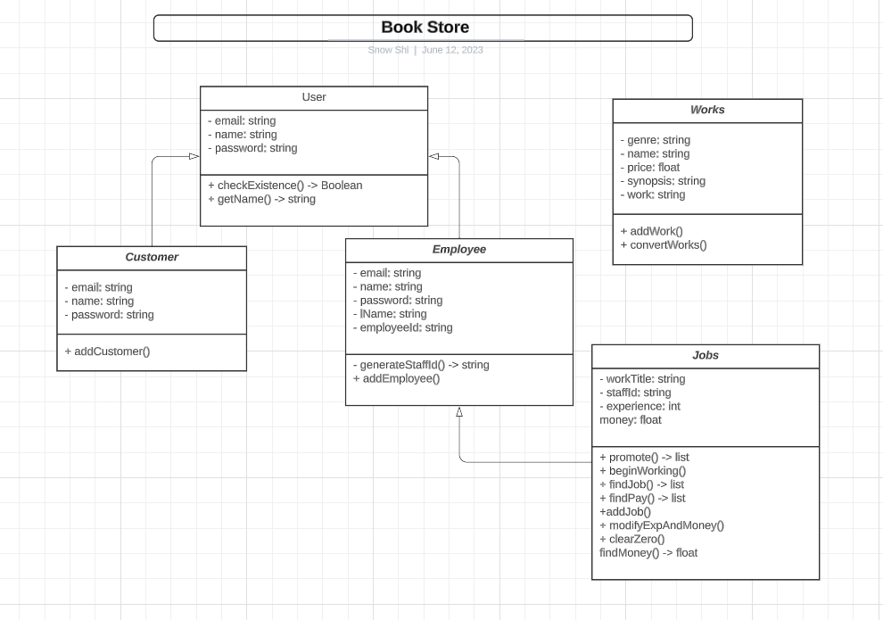

Examples of documentation, recursion, classes and objects, inheritance, file reading and writing, and algorithms for sorting and searching will be demonstrated in this portfolio.
The first lesson I learned from this course was the UML (Unified Modeling Language) class diagrams. It is quite a confusing topic, so my first UML diagram made almost no sense (Figure 1), thankfully I was able to do better in a follow-up assignment (Figure 2).
The first UML diagram entails a program that only had two classes: Works and Customer. However, since I didn't fully comprehend that an UML diagram should only have classes in it, I added additional items that shouldn't belong in an UML diagram. Learning from this, in the follow-up assignment, I removed all the unnecessary items and only included all the classes that existed in the program. This helped make the UML diagram look much cleaner and a lot easier to look at and comprehend.
|  |  |
Another early lesson I received from this course would be how to document classes, functions, and objects. This is prominently shown in the Extending Data Structures assignment, as well as the team project (displayed on the right).
The documentation is in green.
Figure 3 and 4 displays my documentation of classes, slightly different to how I document functions (Figure 6) and objects (Figure 5). The slight variation is naming all the methods/functions that exist and can be accessed in this class. On the other hand, object and functions only need to document for its parameters when necessary. The only similarity between all documentations would be helping the user get a grasp on what the class/object/function is about, which is the job of documentation. Of course, there are many ways to document classes/functions/objects and the examples on the right only demonstrates one of the possible ways to document them.
Recursion is the idea of repeating something over and over again.
The code for this assignment is relatively short, when compared to the other programs I have written, and requires no user input, and told a plausible story: playing Hide-and-Seek.
In this program that I have written, the only function used is a recursive function since it is able to perform the task at hand by itself. This assignment mainly focused on the visual representation of the program, meaning that the program didn't require as much attention as the other assignments. A majority of my time spent on this project is on the visual portion, which I quite enjoy, I think it was fun and I am quite satisfied with the end result.
The PDF displayed beside the code of the recursive function is the visual I made to tell a story, hopefully you are able to tell that it is trying to tell the story of a Hide-and-Seek competition.
A class stores the objects. Class groups up the objects, and organizes them, allowing for easier access.
This is a major concept in this course, and I used objects and classes in most of the assignments assigned in this course. Classes and objects were present and used in the Data Structures assignment, the Extending Data Structures assignment, and, of course, the team project assignment.
An example of what a class looks like is displayed in Figure 7, and an example of how an object is created within a class is displayed in Figure 8. In Figure 8, many parameters are listed under the 'init' function, these parameters (once successfully passed in) are then stored in the object and the specific parameters of each object can be extracted individually.
The relationship between class and objects would be that a class can hold and is meant to contain multiple objects, yet an object only belongs to one singular class, ignoring parent-child classes. Another thing about objects and classes would be that the functions listed under classes can be more easily accessed through objects.
Figure 7. An example of a class.
Figure 8. An example the creation of an object.
Inheritance allows for classes (more than one) to use attributes/functions that already exist in another class without copying and pasting them.
Inheritance was used in the Extending Data Structures assignment, describing because the class ‘User’ is essentially the parent class of both class ‘Customer’ and class ‘Employee so ‘Customer’ and the ‘Employee’ can both use the attributes/functions that already exist in the class ‘User’.
File reading and writing are necessary skills for this course, as all my ‘databases’ are just textfiles (Figure 3). In order to modify and grab information from these ‘databases’, file reading and writing are used (Figure 4). File reading and writing are present in the Data Structures assignment, Extending Data Structures assignment, and the team project. As of right not, textfiles are my databases, of course, I will likely need to use bigger databases using existing databases such as MySQL, SQLite, MongoDB or of the sort. Regardless, I will need to learn more about databases, and slowly move away from using textfiles to store data. I do, however, currently find this method quite convienient, as data can be easily modified if any wrong data were to be recorded, however, that would also bring along many more problems. That then, once again strengthens my desire to learn more about databases, and probably will learn more about the SQL language as well.
Algorithms are essential to programming, especially for sorting and search items within the program. As suggested by their names, sorting algorithms will sort the items in the desired order, and searching algorithms will search for the item requested. Both of these algorithms are explored in the algorithms assignment.
The image on the left shows a short snippet of code containing the insertion sort function. This algorithm uses the logic of comparing elements that are side-by-side. This means that this process can take quite long, as every object in the list will need to be read for this list to be properly ordered. This method works well when dealing with small quantity of data, however, as the amount of data increases, the more inefficient and time-consuming this method will take.
Next will be the searching algorithms. In this algorithm assignment, only two specific types of searching algorithms were used: linear and binary.
Linear search, as suggested by its name, searches the object from the beginning of the list to the end of the list, which, once again, can be quite time consuming when dealing with a large quantity of objects.One reason for using this over binary search would be that a linear search can be performed on any type of list, ordered or unordered. This would ensure that the user can eventually find what they are looking for if they use linear search and if the object truly does exist in the list.
On the other hand, binary search is more efficient, choosing to divide the list up into sections of two to search of items easier. This, however, does have a major flaw, the list that it deals with must be ordered beforehand, meaning that if the list isn't ordered, binary search would probably take ages to find the target, or not find it at all.